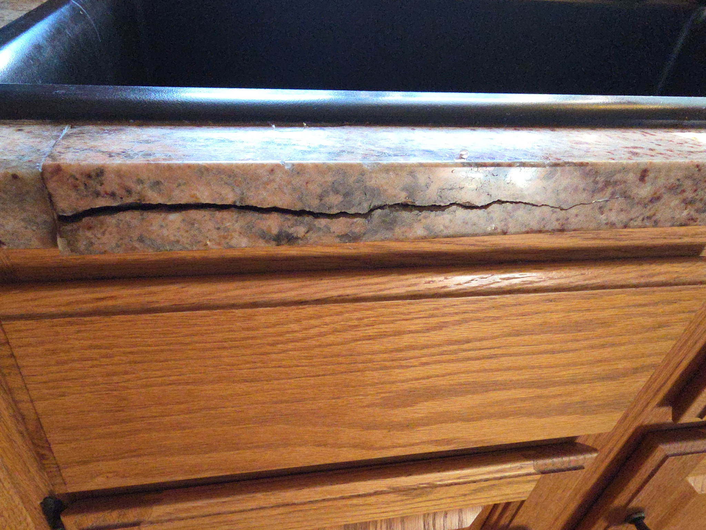
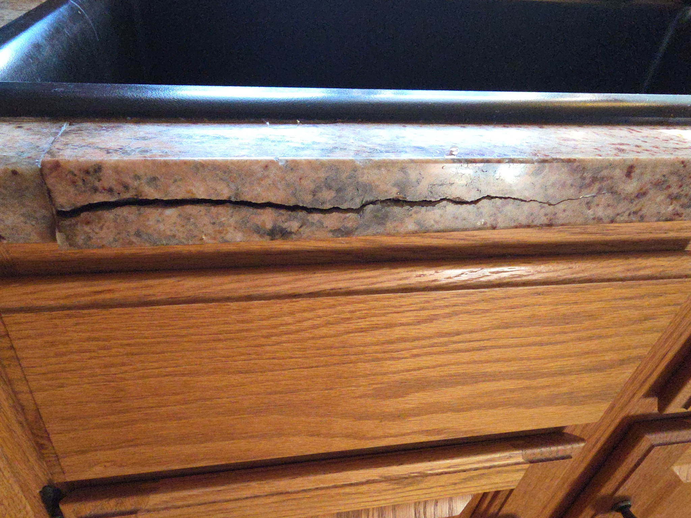

Our Services
- Granite Repair & Polishing
- Marble Restoration & Refinishing
- Crack, Chip & Seam Repairs
- Stone Cleaning & Sealing
- Countertops, Floors & Showers
Before
After

Expert Granite, Marble & Natural Stone Restoration
Before
After
Roc's Stone Repair & Restoration specializes in bringing damaged and worn stone surfaces back to life. With professional techniques and attention to detail, we restore the natural beauty of granite, marble, and other natural stone.
Phone: (608) 397-5412
Email: rocsrestoration@email.com
Service Area: Chester and Montgomery County